I implemented convolution in NumPy two ways: a slow 4-loop version and a faster 2-loop version that uses np.sum(region*kernel) with zero-padding. To match scipy.signal.convolve2d, the kernel must be flipped (otherwise it’s cross-correlation). Under the same settings, outputs match SciPy, but SciPy is much faster, and zero-padding can cause edge artifacts; reflect or symmetric padding reduces those.
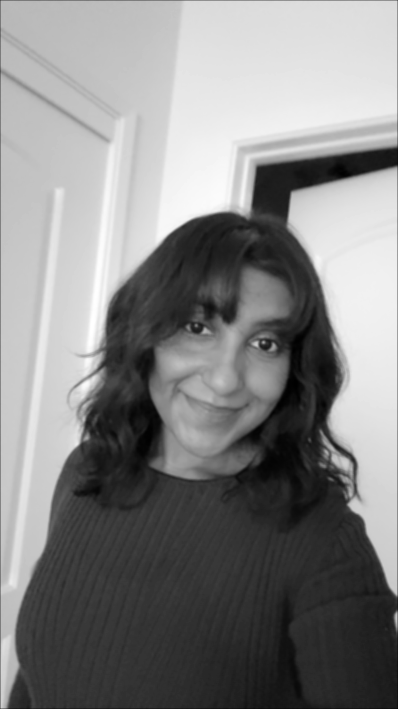
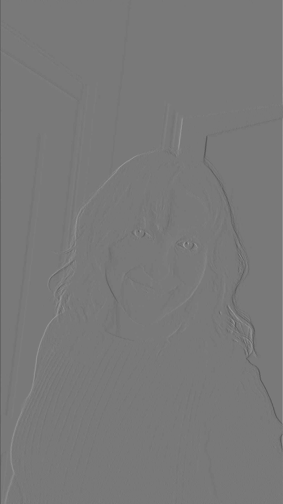
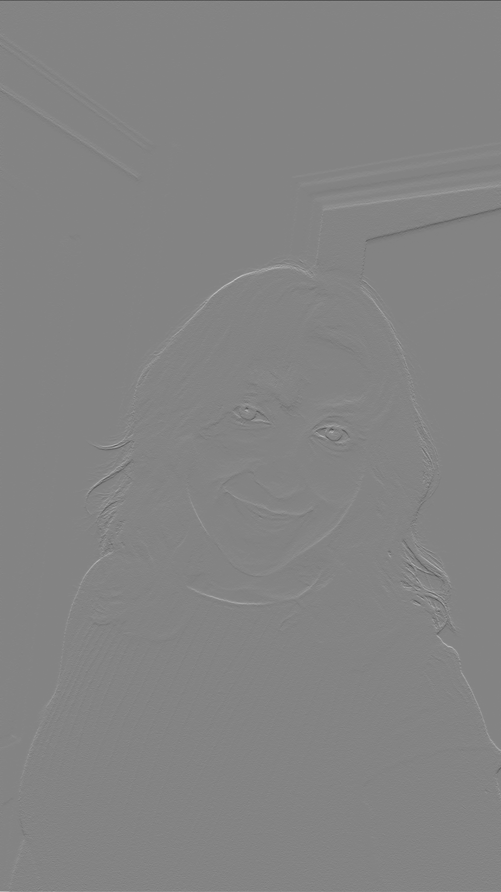
#padding
if padding:
pad_h = kernel.shape[0] // 2 # Half kernel height
pad_w = kernel.shape[1] // 2 # Half kernel width
padded_image = np.pad(image, ((pad_h, pad_h), (pad_w, pad_w)), mode='constant')
else:
padded_image = image
#output dimensions
out_h = padded_image.shape[0] - kernel.shape[0] + 1
out_w = padded_image.shape[1] - kernel.shape[1] + 1
output = np.zeros((out_h, out_w))
#four nested for loops
for out_y in range(out_h): # For each output row
for out_x in range(out_w): # For each output column
for ker_y in range(kernel.shape[0]): # For each kernel row
for ker_x in range(kernel.shape[1]): # For each kernel column
# Multiply corresponding pixels and accumulate
output[out_y, out_x] += padded_image[out_y + ker_y, out_x + ker_x] * kernel[ker_y, ker_x]
return output
#padding
if padding:
pad_h = kernel.shape[0] // 2 # Half kernel height
pad_w = kernel.shape[1] // 2 # Half kernel width
padded_image = np.pad(image, ((pad_h, pad_h), (pad_w, pad_w)), mode='constant')
else:
padded_image = image
#output dimensions
out_h = padded_image.shape[0] - kernel.shape[0] + 1
out_w = padded_image.shape[1] - kernel.shape[1] + 1
output = np.zeros((out_h, out_w))
#two nested for loops
for out_y in range(out_h):
for out_x in range(out_w):
region = padded_image[out_y:out_y + kernel.shape[0],
out_x:out_x + kernel.shape[1]]
output[out_y, out_x] = np.sum(region * kernel)
return outputI used Dx = [1,0,-1] and Dy = [1,0,-1]T to get Ix and Iy, computed the gradient magnitude as sqrt(Ix² + Iy²), then thresholded. I set t = 0.3 (image scaled to [0,1]) as it cuts noise but keeps the main edges. I learned that lower gets messy, higher drops weak lines.
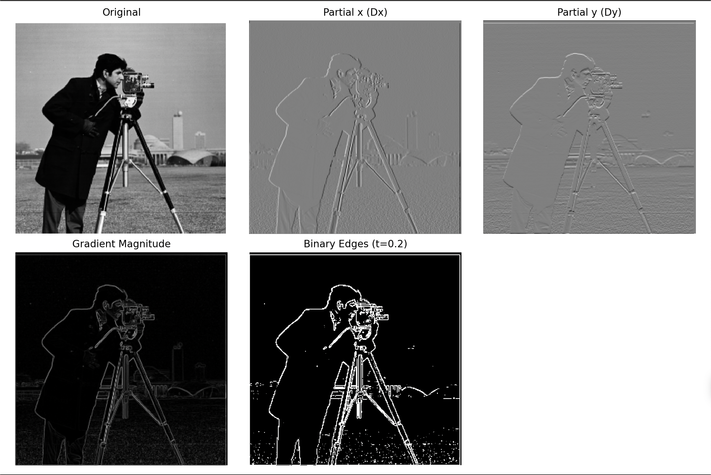
I built the Gaussian with cv2.getGaussianKernel, made DoG filters (x/y), and ran two setups on the cameraman image: blur → finite differences and DoG directly. Both give cleaner, less-speckly edges than plain finite differences (a bit thicker) and basically match aside from tiny numeric differences. I learned that larger sigma smooths more and drops small edges.
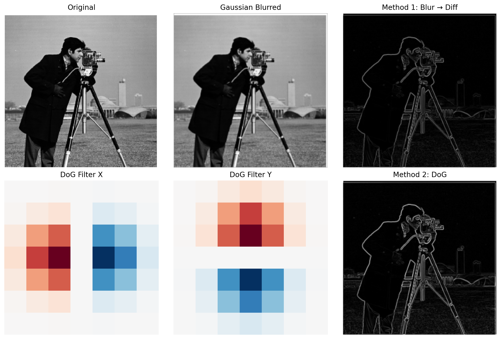
I sharpened with unsharp masking: blur with a Gaussian, take detail as (I − blur), and add it back with weight alpha: Isharp = I + α·(I − blur). On Taj (and my second image), blur keeps coarse structure, the mask isolates edges/texture, and the final looks crisper. Alpha is the strength slider (too high can halo or boost noise); sigma decides what counts as “detail.”
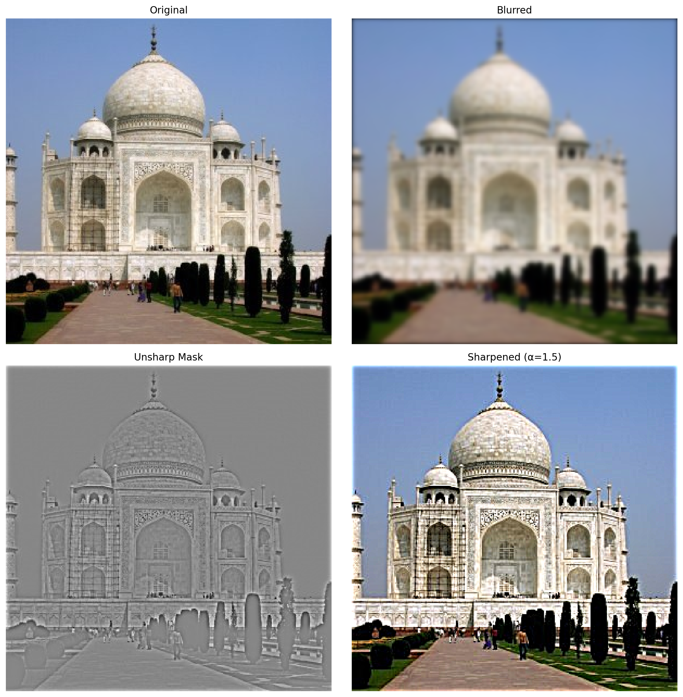
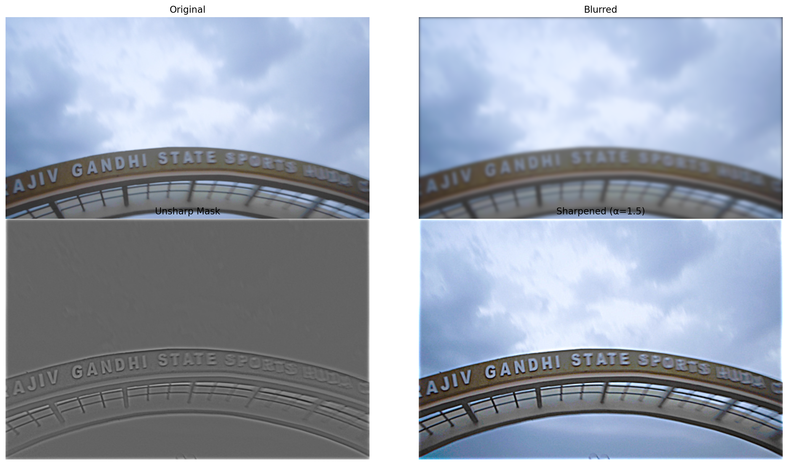
I did the full pipeline on Derek + Nutmeg: aligned the originals, inspected their FFTs, low-passed Derek for the coarse shape and high-passed Nutmeg for detail, then blended with chosen cutoffs. The intermediate results and Fourier plots show which frequencies each contributes, and the final flips between Derek up close and Nutmeg from farther away. For my other two hybrids, I show the originals and the final hybrid.
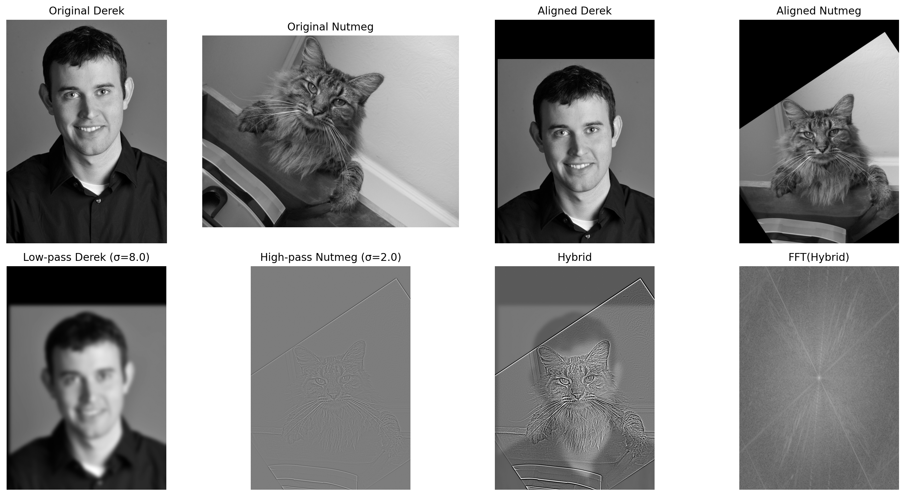
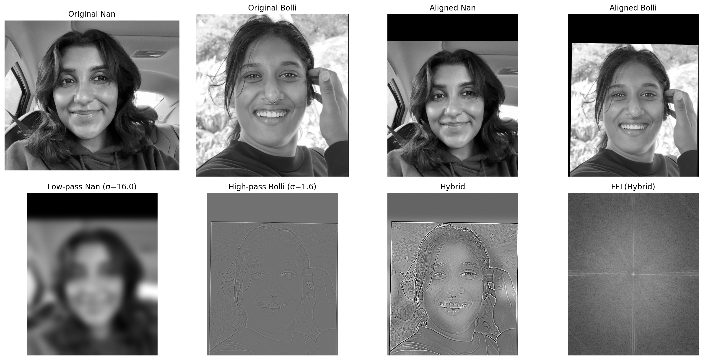
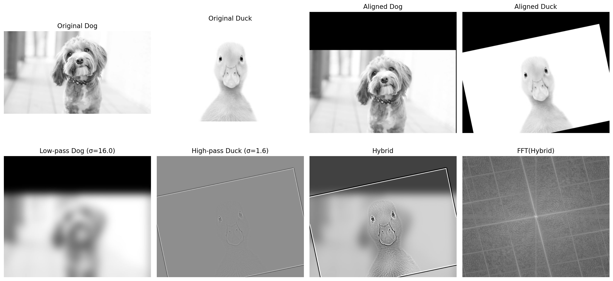
I visualized Gaussian and Laplacian stacks for the Apple + Orange pair and confirmed I could reconstruct the originals almost perfectly from their Laplacian stacks. Then I used multiresolution blending with a Gaussian mask pyramid to combine images at each level, which removes sharp seams and makes the blends look natural. The vertical blend came out clean, and I also made two custom blends, one with a straight horizontal mask and one with an irregular circular mask, to show how different masks affect the smoothness and style of the transition.
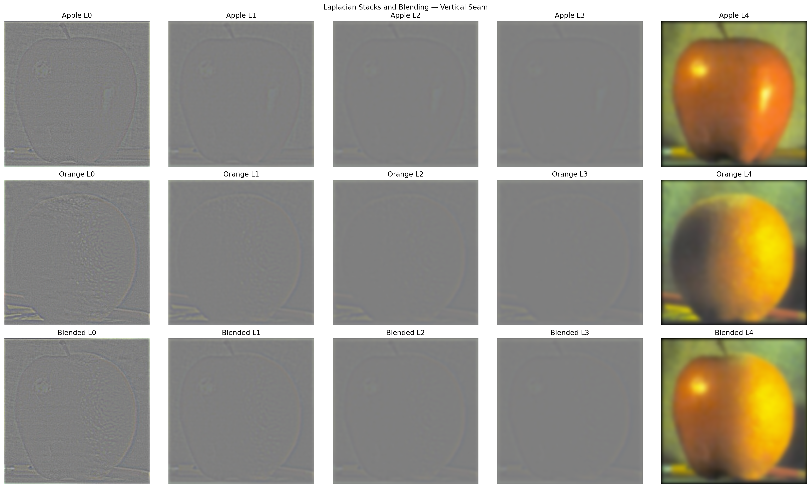
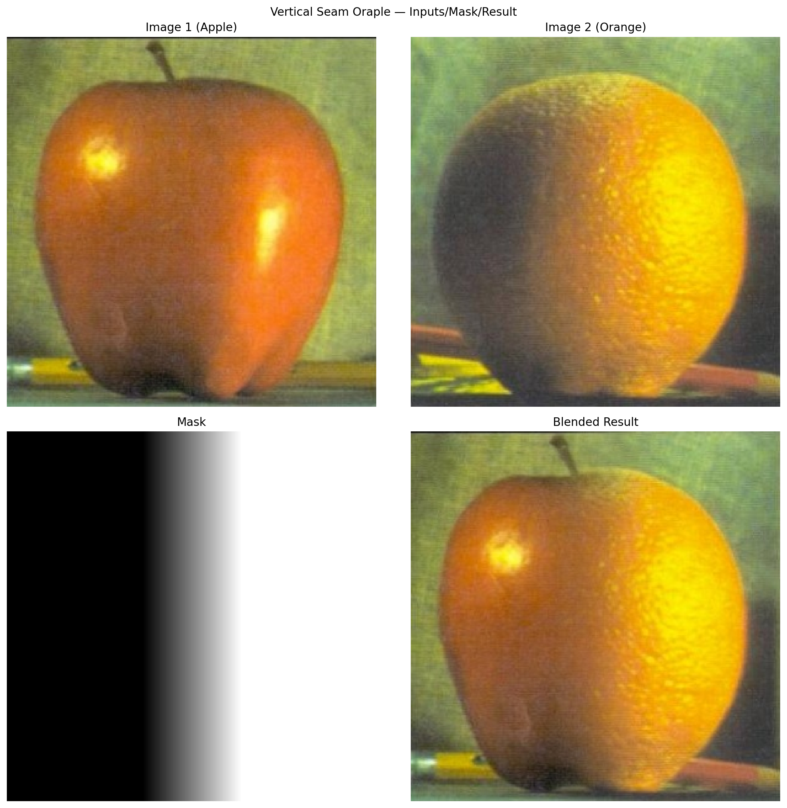
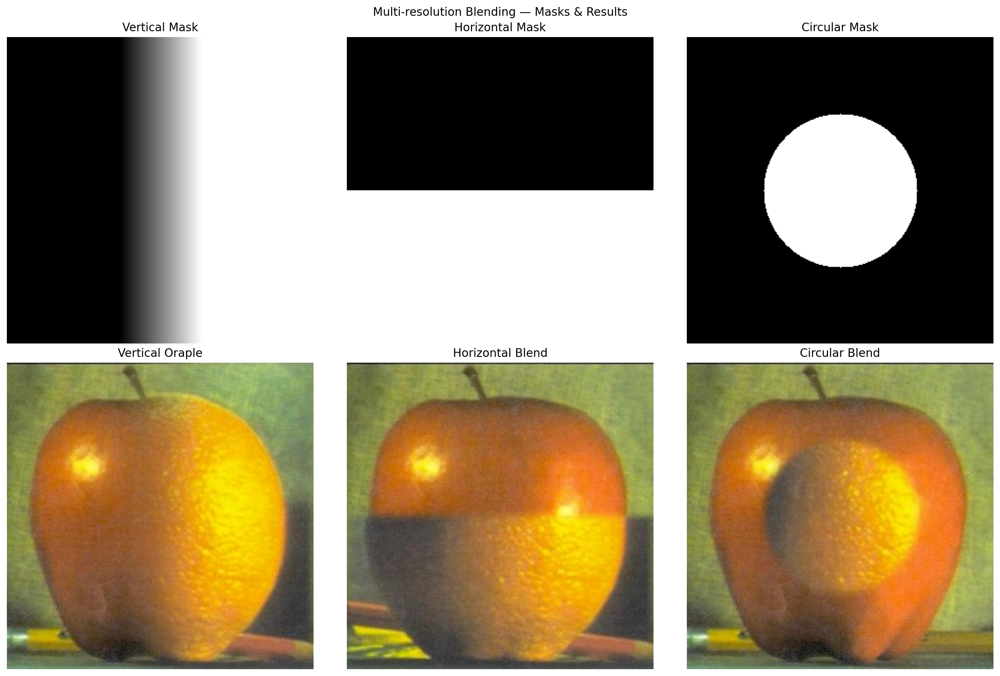
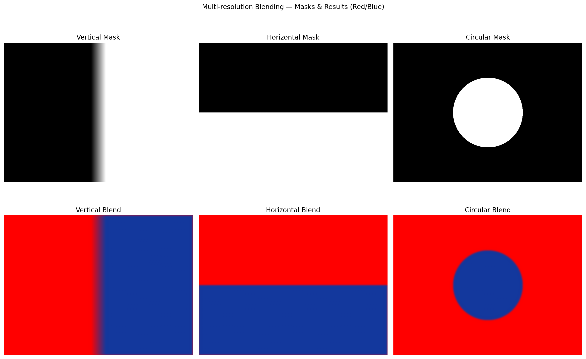
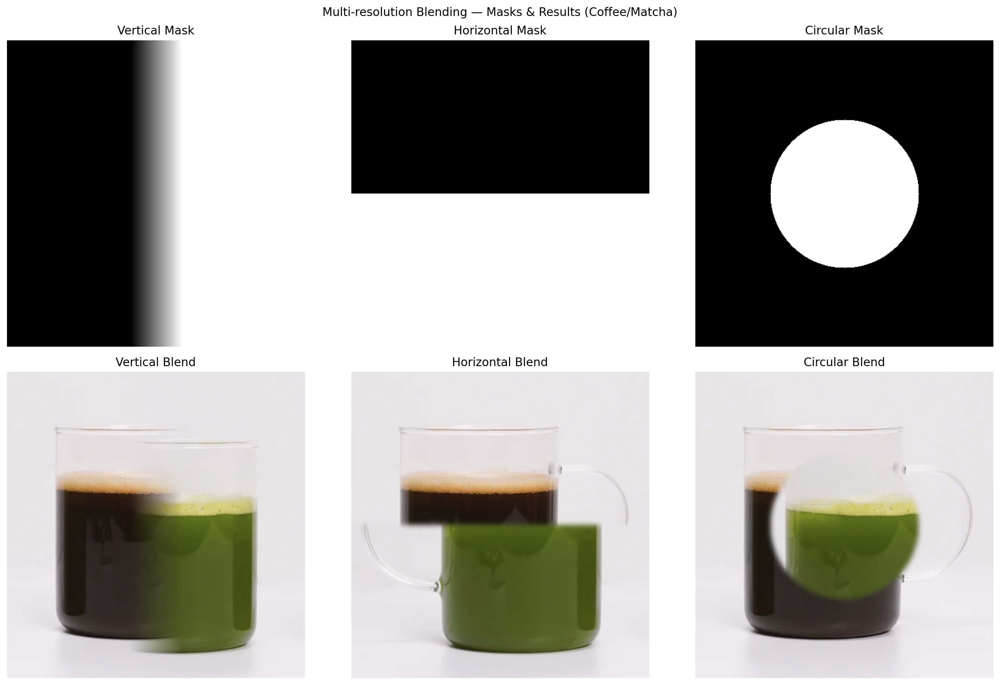